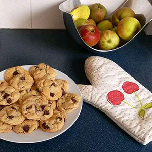

Cookies

Préparation : 15 min
Cuisson : 10 min à 190°C
Difficulté : facile
Ingrédients
- 1 tablette de chocolat à pâtisser de 200 g (Meunier c'est le meilleur)
- 300 g de farine
- 1 sachet de levure
- 1 sachet de sucre vanillé
- 1 pincée de sel
- 125 g de beurre (salé évidemment !)
- 250 g de sucre
- 1 œuf
Ustensiles
- 1 saladier
- 1 casserole
- 1 bol
- 1 plaque de cuisson
Recette
- Préchauffer le four à 190°C
- Couper la tablette de chocolat en petits morceaux pour en faire des pépites
- Dans une terrine mélanger la farine, la levure, le sucre vanillé, le sel et les pépites de chocolat
- Faire fondre le beurre à feu doux
- Ajouter le sucre au beurre et mélanger
- Battre l’œuf en omelette
- Ajouter le au mélange beurre + sucre et mélanger
- Ajouter le mélange beurre/sucre/œuf au mélange farine/levrure/pépites
- Travailler la pâte à la spatule puis avec les mains
- En faire une boule
- Disposer des petites boules de pâte sur une plaque de cuisson
- Enfourner pendant 10 minutes environ
Régale-toi !